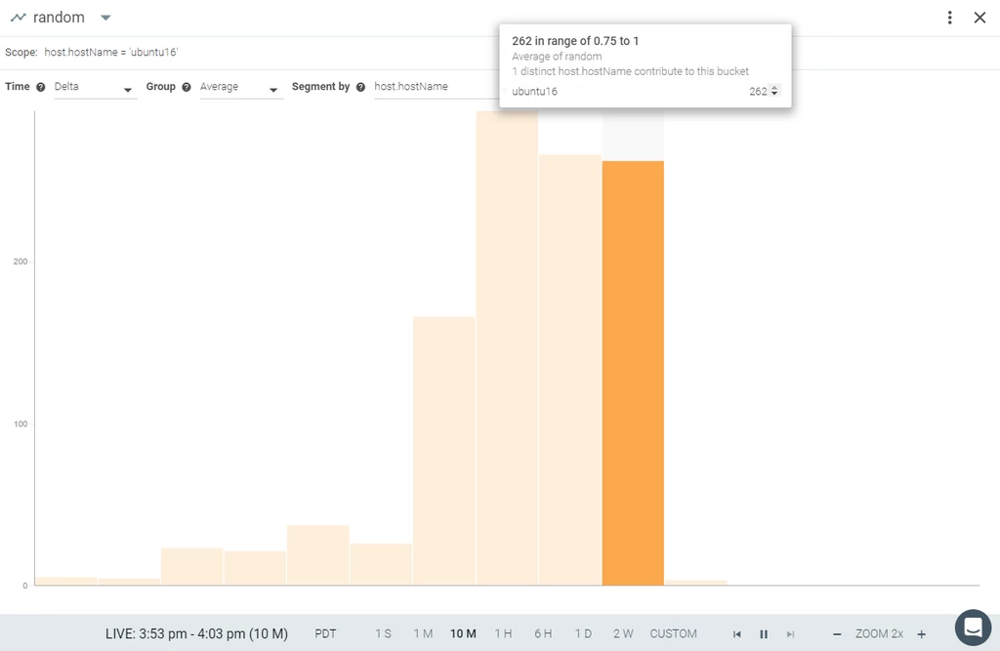

Integrate Prometheus Metrics into Sysdig Monitor UI
Introduction
Starting with version 0.70.0, the Sysdig Monitor Agent provides rich support for automatically scraping metrics from Prometheus exporters. This article describes default behaviors and how to further configure the feature to specify which processes and ports should be targeted for scraping. See our blog post for additional context on the Prometheus metric format and how such metrics are typically used.
Note
The Sysdig Monitor Agent also had rudimentary Prometheus support in versions older than 0.70.0. If you were using this functionality, see the section below on the Legacy Prometheus Application Check for important upgrade information.
Quick Start For Kubernetes Environments
Prometheus users who are already leveraging Kubernetes Service Discovery (specifically the approach in this sample prometheus-kubernetes.yml) may already have Annotations attached to their Pods that mark them as eligible for scraping. Such environments can quickly begin scraping the same metrics using the Sysdig Agent in a couple easy steps.
Enable the Prometheus metrics feature in the Sysdig Agent. Assuming you are deploying using DaemonSets, the needed config can be added to the Agent's
dragent.yamlby including the following in your DaemonSet YAML (placing it in theenvsection for thesysdig-agentcontainer):- name: ADDITIONAL_CONF value: "prometheus:\n enabled: true"
Ensure the Kubernetes Pods that contain your Prometheus exporters have been deployed with the following Annotations to enable scraping (substituting the listening
exporter-TCP-port):spec: template: metadata: annotations: prometheus.io/scrape: "true" prometheus.io/port: "exporter-TCP-port"The configuration above assumes your exporters use the typical endpoint called
/metrics. If an exporter is using a different endpoint, this can also be specified by adding the following additional optional Annotation, substituting theexporter-endpoint-name:prometheus.io/path: "/exporter-endpoint-name"
If you try this Kubernetes Deployment of a simple exporter, you will quickly see auto-discovered Prometheus metrics being displayed in Sysdig Monitor. You can use this working example as a basis to similarly Annotate your own exporters.
If you have Prometheus exporters not deployed in annotated Kubernetes Pods that you would like to scrape, the following sections describe the full set of options to configure the Agent to find and scrape your metrics.
Summary of Functionality
The Sysdig Monitor Agent uses its visibility to all running processes (at both the host and container levels) to find eligible targets for scraping Prometheus metrics. By default, no scraping is attempted. Once the feature is enabled, the Agent assembles a list of eligible targets in two steps:
A process is determined to be eligible for possible scraping if it positively matches against a series of Process Filter include/exclude rules.
The Agent will then attempt to scrape an eligible process at a
/metricsendpoint on all of its listening TCP ports, unless additional configuration is present to restrict scraping to a subset of ports and/or another endpoint name.
The metrics ultimately appear in the Sysdig Monitor Explore interface in the Prometheus section.
 |
Within the set of eligible processes/ports/endpoints, the Agent uses an auto-discover approach to scrape only ports that are exporting Prometheus metrics, and will stop attempting to scrape or retry on ports based on how they respond to attempts to connect and scrape them. It is therefore strongly recommended that you create a configuration that restricts the process and ports for attempted scraping to the minimum expected range for your exporters. This minimizes the potential for unintended side-effects in both the Agent and your applications due to repeated failed connection attempts.
Configuration
As is typical for the Agent, the default configuration for the feature is specified in dragent.default.yaml , and you can override the defaults by configuring parameters in the dragent.yaml . For each parameter you do not set in dragent.yaml , the defaults in dragent.default.yaml will remain in effect.
Main Config Parameters
Parameter | Default | Description |
|---|---|---|
| | Turns Prometheus scraping on/off. |
| | How often (in seconds) the Agent will scrape a port for Prometheus metrics |
| | Whether the Agent should log details on failed attempts to scrape eligible targets |
| | The maximum number of total Prometheus metrics that will be scraped across all targets. This value of 1000 is the maximum per-Agent, and is a separate limit from other Custom Metrics (e.g. statsd, JMX, and other Application Checks).Integrate Applications (Default App Checks) |
| | The maximum number of Prometheus metrics that the Agent will save from a single scraped target |
| | The maximum number of tags per Prometheus metric that the Agent will save from a scraped target |
| | Whether the Agent should scrape and report histogram metrics. See the section below on histograms for details. |
| See below | Specifies which processes may be eligible for scraping. See the Process Filter section below. |
Process Filter
The process_filter section specifies which of the processes known by an Agent may be eligible for scraping.
Note that once you specify a process_filter in your dragent.yaml , this replaces the entire Prometheus process_filter section (i.e. all rules) shown in the dragent.default.yaml .
The Process Filter is specified in a series of include and exclude rules that are evaluated top-to-bottom for each process known by an Agent. If a process matches an include rule, scraping will be attempted via a /metrics endpoint on each listening TCP port for the process, unless a conf section also appears within the rule to further restrict how the process will be scraped (see the "conf" section below).
Multiple patterns can be specified in a single rule, in which case all patterns must match for the rule to be a match (AND logic).
Within a pattern value, simple "glob" wildcarding may be used, where * matches any number of characters (including none) and ? matches any single character. Note that due to YAML syntax, when using wildcards, be sure to enclose the value in quotes ( "*" ).
The table below describes the supported patterns in Process Filter rules. To provide realistic examples, we'll use a simple sample Prometheus exporter (source code here) which can be deployed as a container using the Docker command line below. To help illustrate some of the configuration options, this sample exporter presents Prometheus metrics on /promtheus instead of the more common /metrics endpoint, which will be shown in the example configurations further below.
# docker run -d -p 8080:8080 \
--label class="exporter" \
--name my-java-app \
luca3m/prometheus-java-app
# ps auxww | grep app.jar
root 11502 95.9 9.2 3745724 753632 ? Ssl 15:52 1:42 java -jar /app.jar --management.security.enabled=false
# curl http://localhost:8080/prometheus
...
random_bucket{le="0.005",} 6.0
random_bucket{le="0.01",} 17.0
random_bucket{le="0.025",} 51.0
...Pattern name | Description | Example |
|---|---|---|
| Matches if the process is running inside a container running the specified image | |
| Matches if the process is running inside a container with the specified name | |
| Matches if the process is running in a container that has a Label matching the given value | |
| Matches if the process is attached to a Kubernetes object (Pod, Namespace, etc.) that is marked with the Annotation/Label matching the given value. Note: This pattern does not apply to the Docker-only command-line shown above, but would instead apply if the exporter were installed as a Kubernetes Deployment using this example YAML. Note: See the section below on Kubernetes Objects for information on the full set of supported Annotations and Labels. | |
| Matches the name of the running process | |
| Matches a command line argument | |
| Matches if the process is listening on one or more TCP ports. The pattern for a single rule can specify a single port as shown in this example, or a single range (e.g. Note: This parameter is only used to confirm if a process is eligible for scraping based on the ports on which it is listening. For example, if a process is listening on one port for application traffic and has a second port open for exporting Prometheus metrics, it would be possible to specify the application port here (but not the exporting port), and the exporting port in the | |
| Matches if an Application Check with the specific name or pattern is scheduled to run for the process.Integrate Applications (Default App Checks) | |
Instead of the include examples shown above that would have each matched our process, due to the previously-described ability to combine multiple patterns in a single rule, the following very strict configuration would also have matched:
- include:
container.image: luca3m/prometheus-java-app
container.name: my-java-app
container.label.class: exporter
process.name: java
process.cmdline: "*app.jar*"
port: 8080conf
Each include rule in the port_filter may include a conf portion that further describes how scraping will be attempted on the eligible process. If a conf portion is not included, scraping will be attempted at a /metrics endpoint on all listening ports of the matching process. The possible settings:
Parameter name | Description | Example |
|---|---|---|
| Either a static number for a single TCP port to be scraped, or a container/Kubernetes Label name or Kubernetes Annotation specified in curly braces. If the process is running in a container that is marked with this Label or is attached to a Kubernetes object (Pod, Namespace, etc.) that is marked with this Annotation/Label, scraping will be attempted only on the port specified as the value of the Label/Annotation. Note: The Label/Annotation to match against will not include the text shown in red. Note: See the section below on Kubernetes Objects for information on the full set of supported Annotations and Labels. Note: If running the exporter inside a container, this should specify the port number that the exporter process in the container is listening on, not the port that the container exposes to the host. | - or - - or - |
| A set of include and exclude rules that define the ultimate set of listening TCP ports for an eligible process on which scraping may be attempted. Note that the syntax is different from the | |
| Either the static specification of an endpoint to be scraped, or a container/Kubernetes Label name or Kubernetes Annotation specified in curly braces. If the process is running in a container that is marked with this Label or is attached to a Kubernetes object (Pod, Namespace, etc.) that is marked with this Annotation/Label, scraping will be attempted via the endpoint specified as the value of the Label/Annotation. If Note: A Label/Annotation to match against will not include the text shown in red. Note: See the section below on Kubernetes Objects for information on the full set of supported Annotations and Labels. | - or - - or - |
host | A hostname or IP address. The default is localhost. | host: 192.168.1.101 - or - host: subdomain.example.com - or - host: localhost |
| When set to (Available in Agent version 0.79.0 and newer) | |
| When set to (Available in Agent version 0.79.0 and newer) | |
Authentication Integration
As of agent version 0.89, Sysdig can collect Prometheus metrics from endpoints requiring authentication. Use the parameters below to enable this function.
For username/password authentication:
usernamepassword
For authentication using a token:
auth_token_path
For certificate authentication with a certificate key:
auth_cert_pathauth_key_path
Note
Token substitution is also supported for all the authorization parameters. For instance a username can be taken from a Kubernetes annotation by specifying
username: "{kubernetes.service.annotation.prometheus.openshift.io/username}"
conf Authentication Example
Below is an example of the dragent.yaml section showing all the Prometheus authentication configuration options, on OpenShift, Kubernetes, and etcd.
In this example:
The
username/passwordare taken from a default annotation used by OpenShift.The
auth tokenpath is commonly available in Kubernetes deployments.The
certificateandkeyused here for etcd may normally not be as easily accessible to the agent. In this case they were extracted from the host namespace, constructed into Kubernetes secrets, and then mounted into the agent container.
prometheus:
enabled: true
process_filter:
- include:
port: 1936
conf:
username: "{kubernetes.service.annotation.prometheus.openshift.io/username}"
password: "{kubernetes.service.annotation.prometheus.openshift.io/password}"
- include:
process.name: kubelet
conf:
port: 10250
use_https: true
auth_token_path: "/run/secrets/kubernetes.io/serviceaccount/token"
- include:
process.name: etcd
conf:
port: 2379
use_https: true
auth_cert_path: "/run/secrets/etcd/client-cert"
auth_key_path: "/run/secrets/etcd/client-key"Kubernetes Objects
As described above, there are multiple configuration options that can be set based on auto-discovered values for Kubernetes Labels and/or Annotations. The format in each case begins with "kubernetes.OBJECT.annotation." or "kubernetes.OBJECT.label." where OBJECT can be any of the following supported Kubernetes object types:
daemonSetdeploymentnamespacenodepodreplicaSetreplicationControllerservicestatefulset
The configuration text you add after the final dot becomes the name of the Kubernetes Label/Annotation that the Agent will look for. If the Label/Annotation is discovered attached to the process, the value of that Label/Annotation will be used for the configuration option.
Note that there are multiple ways for a Kubernetes Label/Annotation to be attached to a particular process. One of the simplest examples of this is the Pod-based approach shown above in the Quick Start For Kubernetes Environments. However, as an example alternative to marking at the Pod level, you could attach Labels/Annotations at the Namespace level, in which case auto-discovered configuration options would apply to all processes running in that Namespace regardless of whether they're in a Deployment, DaemonSet, ReplicaSet, etc.
Examples
As an example that pulls together many of the configuration elements shown above, consider the default Agent configuration that's inherited from the dragent.default.yaml .
prometheus:
enabled: false
interval: 10
log_errors: true
max_metrics: 1000
max_metrics_per_process: 100
max_tags_per_metric: 20
# Filtering processes to scan. Processes not matching a rule will not
# be scanned
# If an include rule doesn't contain a port or port_filter in the conf
# section, we will scan all the ports that a matching process is listening to.
process_filter:
- exclude:
process.name: docker-proxy
- exclude:
container.image: sysdig/agent
# special rule to exclude processes matching configured prometheus appcheck
- exclude:
appcheck.match: prometheus
- include:
container.label.io.prometheus.scrape: "true"
conf:
# Custom path definition
# If the Label doesn't exist we'll still use "/metrics"
path: "{container.label.io.prometheus.path}"
# Port definition
# - If the Label exists, only scan the given port.
# - If it doesn't, use port_filter instead.
# - If there is no port_filter defined, skip this process
port: "{container.label.io.prometheus.port}"
port_filter:
- exclude: [9092,9200,9300]
- include: 9090-9500
- include: [9913,9984,24231,42004]
- exclude:
container.label.io.prometheus.scrape: "false"
- include:
kubernetes.pod.annotation.prometheus.io/scrape: true
conf:
path: "{kubernetes.pod.annotation.prometheus.io/path}"
port: "{kubernetes.pod.annotation.prometheus.io/port}"
- exclude:
kubernetes.pod.annotation.prometheus.io/scrape: falseThings to note about this default configuration:
Once enabled, this default configuration is ideal for the use case described above in the Quick Start For Kubernetes Environments.
All Prometheus scraping is disabled by default to allow for a smooth transition for users of the legacy Prometheus Application Check (see the note below). To enable the entire config shown here, you would only need to add the following to your
dragent.yaml:prometheus: enabled: true
A Process Filter rule excludes processes that are likely to exist in most environments but are known to never export Prometheus metrics, such as the Docker Proxy and the Agent itself.
Another Process Filter rule ensures that any processes configured to be scraped by the legacy Prometheus Application Check will not be scraped. See the section below on the Legacy Prometheus Application Check for details.
Another Process Filter rule is tailored to use of container Labels. Processes marked with the container Label
io.prometheus.scrapewill become eligible for scraping, and if further marked with container Labelsio.prometheus.portand/orio.prometheus.path, scraping will be attempted only on this port and/or endpoint. If the container is not marked with the specified path Label, scraping the/metricsendpoint will be attempted. If the container is not marked with the specified port Label, any listening ports in theport_filterwill be attempted for scraping (thisport_filterin the default is set for the range of ports for common Prometheus exporters, with exclusions for ports in the range that are known to be used by other applications that are not exporters).The final Process Filter include rule is tailored to the use case described above in Quick Start For Kubernetes Environments.
With this default configuration enabled, a containerized install of our example exporter shown below would be automatically scraped via the Agent.
# docker run -d -p 8080:8080 \
--label io.prometheus.scrape="true" \
--label io.prometheus.port="8080" \
--label io.prometheus.path="/prometheus" \
luca3m/prometheus-java-appSimilarly, in a Kubernetes-based environment, a Deployment with the Annotations as shown in using this example YAML would also be scraped by enabling the default configuration.
apiVersion: extensions/v1beta1
kind: Deployment
metadata:
name: prometheus-java-app
spec:
replicas: 1
template:
metadata:
labels:
app: prometheus-java-app
annotations:
prometheus.io/scrape: "true"
prometheus.io/path: "/prometheus"
prometheus.io/port: "8080"
spec:
containers:
- name: prometheus-java-app
image: luca3m/prometheus-java-app
imagePullPolicy: Always
Finally, we'll consider an example for a non-containerized environment or a containerized environment that doesn't use Labels or Annotations. The following dragent.yaml would override the default and do per-second scrapes of our sample exporter and also a second exporter on port 5005, each at their respective non-standard endpoints. This can be thought of as a conservative "whitelist" type of configuration since it restricts scraping to only exporters that are known to exist in the environment and the ports on which they're known to export Prometheus metrics.
prometheus:
enabled: true
interval: 1
process_filter:
- include:
process.cmdline: "*app.jar*"
conf:
port: 8080
path: "/prometheus"
- include:
port: 5005
conf:
port: 5005
path: "/wacko"Histograms
By default, the Agent does not scrape details for the histogram metrics reported by exporters. To enable this, include the additional histograms option:
prometheus: enabled: true histograms: true
Note that the way Prometheus histograms are typically reported by exporters, they are cumulative across buckets and also report accumulations within each bucket range since the exporter started. To make this data easier to visualize, the Sysdig Monitor application presents histogram data as a delta over the selected time range. For instance, below we've had our sample Prometheus exporter running for over an hour, accumulating data in a histogram metric called random:
# curl http://127.0.0.1:8080/prometheus
...
# HELP random Random sleep
# TYPE random histogram
random_bucket{le="0.005",} 33.0
random_bucket{le="0.01",} 74.0
random_bucket{le="0.025",} 180.0
random_bucket{le="0.05",} 404.0
random_bucket{le="0.075",} 639.0
random_bucket{le="0.1",} 848.0
random_bucket{le="0.25",} 2145.0
random_bucket{le="0.5",} 4307.0
random_bucket{le="0.75",} 6371.0
random_bucket{le="1.0",} 8592.0
random_bucket{le="2.5",} 8619.0
random_bucket{le="5.0",} 8619.0
random_bucket{le="7.5",} 8619.0
random_bucket{le="10.0",} 8619.0
random_bucket{le="+Inf",} 8619.0
...However in the Sysdig Monitor interface, if we select the metric and a time range such as 10 minutes, we'll see the per-bucket distribution for only that time range. Hover your mouse over a particular bar to see the bucket range. If this histogram metric is being reported from multiple sources, you will see the contribution to the total from each source based on your choice of Segment by. In this case we are segmenting by hostname and only have one contributing source, called "ubuntu16".
|  |
Logging
After the Agent begins scraping Prometheus metrics, there may be a delay of up to a few minutes before the metrics become visible in Sysdig Monitor. To help quickly confirm your configuration is correct, starting with Agent version 0.80.0, the following log line will appear in the Agent log the first time since since starting that it has found and is successfully scraping at least one Prometheus exporter:
2018-05-04 21:42:10.048, 8820, Information, 05-04 21:42:10.048324 Starting export of Prometheus metrics
As this is an INFO level log message, it will appear in Agents using the default logging settings. To reveal even more detail, increase the Agent log level to DEBUG, which produces a message like the following that reveals the name of a specific metric first detected. You can then look for this metric to be visible in Sysdig Monitor shortly after.
2018-05-04 21:50:46.068, 11212, Debug, 05-04 21:50:46.068141 First prometheus metrics since agent start: pid 9583: 5 metrics including: randomSummary.95percentile
Troubleshooting
See the previous section for information on expected log messages during successful scraping. If you have enabled Prometheus and are not seeing the Starting export message shown there, revisit your configuration.
It is also suggested to leave the configuration option in its default setting of log_errors: true , which will reveal any issues scraping eligible processes in the Agent log.
For example, here is an error message for a failed scrape of a TCP port that was listening but not accepting HTTP requests:
2017-10-13 22:00:12.076, 4984, Error, sdchecks[4987] Exception on running check prometheus.5000: Exception('Timeout when hitting http://localhost:5000/metrics',)
2017-10-13 22:00:12.076, 4984, Error, sdchecks, Traceback (most recent call last):
2017-10-13 22:00:12.076, 4984, Error, sdchecks, File "/opt/draios/lib/python/sdchecks.py", line 246, in run
2017-10-13 22:00:12.076, 4984, Error, sdchecks, self.check_instance.check(self.instance_conf)
2017-10-13 22:00:12.076, 4984, Error, sdchecks, File "/opt/draios/lib/python/checks.d/prometheus.py", line 44, in check
2017-10-13 22:00:12.076, 4984, Error, sdchecks, metrics = self.get_prometheus_metrics(query_url, timeout, "prometheus")
2017-10-13 22:00:12.076, 4984, Error, sdchecks, File "/opt/draios/lib/python/checks.d/prometheus.py", line 105, in get_prometheus_metrics
2017-10-13 22:00:12.077, 4984, Error, sdchecks, raise Exception("Timeout when hitting %s" % url)
2017-10-13 22:00:12.077, 4984, Error, sdchecks, Exception: Timeout when hitting http://localhost:5000/metricsHere is an example error message for a failed scrape of a port that was responding to HTTP requests on the /metrics endpoint but not responding with valid Prometheus-format data. The invalid endpoint is responding as follows:
# curl http://localhost:5002/metrics This ain't no Prometheus metrics!
And the corresponding error message in the Agent log, indicating no further scraping will be attempted after the initial failure:
2017-10-13 22:03:05.081, 5216, Information, sdchecks[5219] Skip retries for Prometheus error: could not convert string to float: ain't 2017-10-13 22:03:05.082, 5216, Error, sdchecks[5219] Exception on running check prometheus.5002: could not convert string to float: ain't
Legacy Prometheus Application Check
Special care should be taken if you're already using the legacy Prometheus Application Check (explained below) to scrape any Prometheus metrics. You will be able to scrape for the same metrics using the new approach and they will appear in Sysdig Monitor under the same metric name. However, any historical data from when it was collected via the legacy Prometheus App Check will no longer be visible. As a result, the new approach is disabled by default, and you should carefully plan your transition to using the new approach for each set of metrics when you feel you can endure the break with historical data.
The legacy Prometheus application check is able to collect metrics from a static external HTTP endpoint exposing metrics in Prometheus format and import them as StatsD metrics in Sysdig.
To configure the legacy Prometheus application check, Add these lines to the agent's configuration file:
app_checks:
- name: prometheus
pattern:
comm: python
arg: /opt/draios/bin/sdchecks
conf:
url: http://{YOUR_PROMETHEUS_ENDPOINT_IP}:8080/metrics